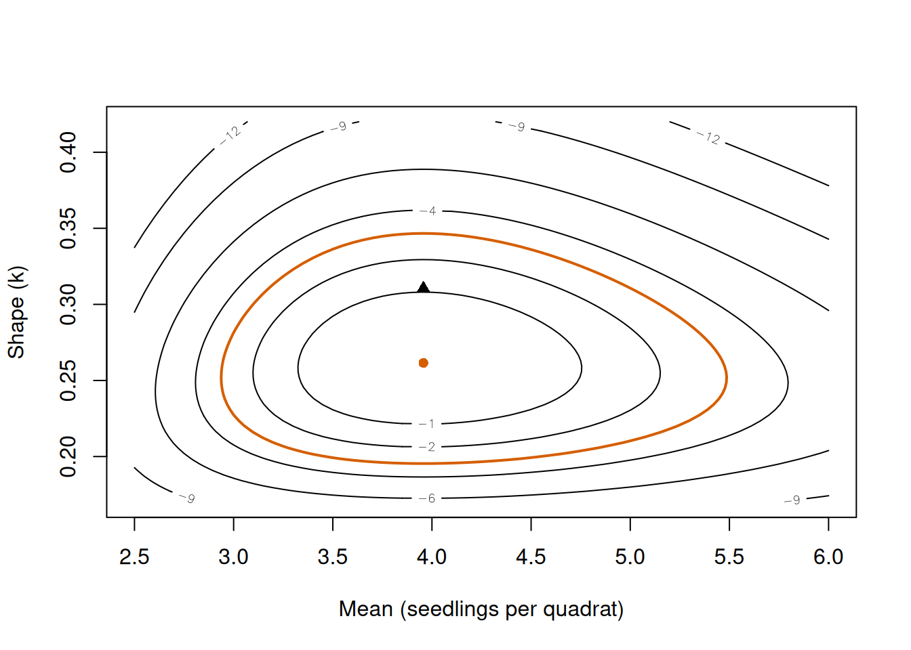
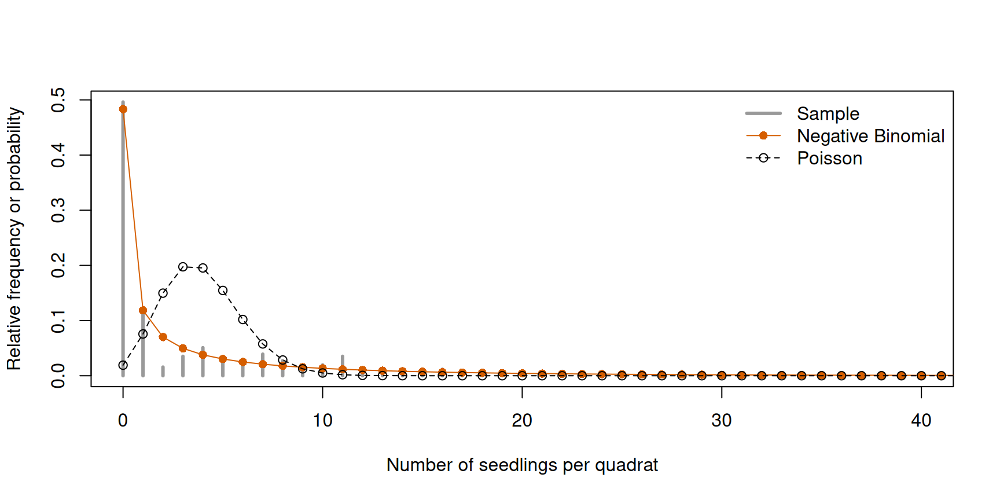
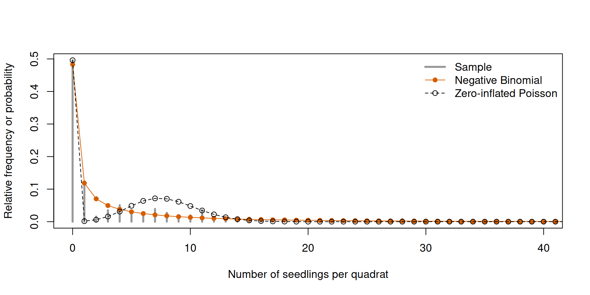
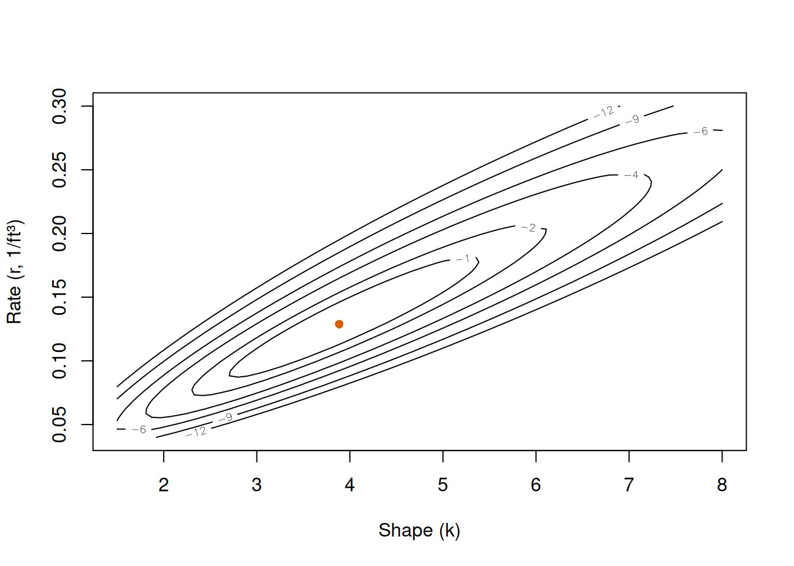
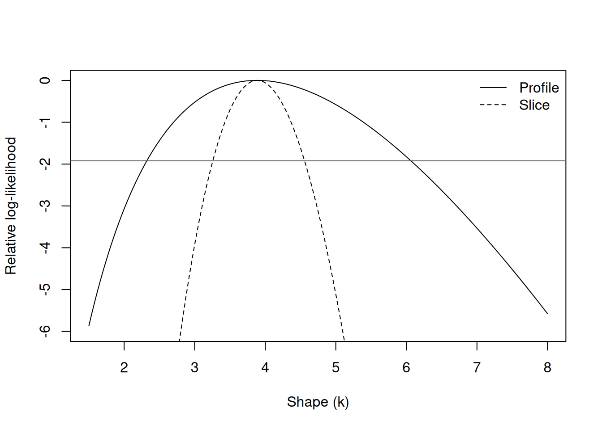

# Load the glacier lily data from the emdbook package without attaching the package.
data(Lily_sum, package = "emdbook")
# Number of seedlings in each 2 m by 2 m quadrat, and the number of quadrats.
lily_counts = Lily_sum$seedlings
n_lily = length(lily_counts)Chapter 4: Maximum likelihood estimation — solutions
The fully worked first exercise is on the student practical page. These solutions use the same data, tasks and seeds as Exercises 2–5 on that page. Exercises 1 to 4 are the core of the practical and Exercise 5 is extra practice.
1 Exercise 2: Glacier lily seedlings in quadrats
The data set Lily_sum in the package emdbook contains counts of the glacier lily Erythronium grandiflorum in a grid of 16 × 16 quadrats of 2 m × 2 m in Washington Gulch, sampled in 1992 (Thomson et al. 1996). We use the column seedlings, the number of seedlings in each of the 256 quadrats. Load the data with data(Lily_sum, package = "emdbook").
Let \(X_i\) be the number of seedlings in quadrat \(i\). We use a Negative Binomial model with mean \(\mu\) and shape \(k\),
\[ X_i \sim \operatorname{NegBin}(\mu, k), \qquad \operatorname{Var}(X_i)=\mu+\frac{\mu^2}{k}, \]
and assume that the quadrats are i.i.d. Neighbouring quadrats of a grid are likely to resemble each other, so this is a simplification, as it was for the visits to owl nests in the Chapter 3 practical (models for observations that are not independent start in Chapter 7).
- Estimate \(\mu\) and \(k\) with the method of moments, as in the Chapter 3 practical. Also calculate the fraction of quadrats without seedlings and the largest count.
- Write the NLL of the model with \(\log\mu\) and \(\log k\) as parameters and minimise it with
optim(), using the method-of-moments estimates as starting values andhessian = TRUE. Report the estimates on the original scale. Compare the log-likelihood at the maximum likelihood estimates with the log-likelihood at the method-of-moments estimates. - Calculate the log-likelihood on a grid of values of \(\mu\) and \(k\) with two nested
forloops and draw the contours of the relative log-likelihood withcontour(). Add both pairs of estimates and the contour of the approximate joint 95% confidence region. Is the method-of-moments estimate inside the region? - Calculate a 95% Wald interval for \(k\) (on the log scale, with the endpoints transformed back) and a 95% profile likelihood interval for \(k\) with
uniroot(). Compare them. - Plot the relative frequencies of the counts together with the probabilities of the fitted Negative Binomial model and of a Poisson model. Compare the fraction of empty quadrats under each model with the observed fraction, and compare the two models with AIC and with its small-sample correction AICc (see Model comparison with AIC).
1.1 Solution
1.1.1 Question 1
The observational unit is one quadrat. As in the Chapter 3 practical, the method of moments equates the mean and the variance of the model with those of the sample, which gives \(\hat\mu=\overline x\) and \(\hat k_{\mathrm{MM}}=\hat\mu^2/(\hat\sigma^2-\hat\mu)\), where \(\hat\sigma^2\) is the variance of the sample with divisor \(n\):
# Method-of-moments estimates, as in the practical of Chapter 3: the mean, the variance
# with divisor n, and the shape k from variance = mu + mu^2 / k.
mu_mom_lily = mean(lily_counts)
variance_lily = mean((lily_counts - mu_mom_lily)^2)
k_mom_lily = mu_mom_lily^2 / (variance_lily - mu_mom_lily)
c(
n_quadrats = n_lily,
mean = mu_mom_lily,
variance = variance_lily,
k_mom = k_mom_lily,
fraction_empty = mean(lily_counts == 0),
maximum = max(lily_counts)
) n_quadrats mean variance k_mom fraction_empty
256.0000000 3.9570312 54.3458099 0.3107457 0.4960938
maximum
72.0000000 There are 256 quadrats, with a mean of 3.96 seedlings per quadrat and a variance of 54.3, almost 14 times the mean. The method-of-moments estimate of the shape is therefore small, \(\hat k_{\mathrm{MM}}\approx 0.31\). Half of the quadrats have no seedlings (127 of 256, a fraction of 0.496), while the largest count is 72 seedlings.
1.1.2 Question 2
The NLL is the one of the theory. optim() passes both parameters to the function in one vector, and inside the function par[1] is \(\log\mu\) and par[2] is \(\log k\), so that both parameters stay positive. We start the search at the method-of-moments estimates:
# Negative log-likelihood of the Negative Binomial model with mean mu and shape k.
# par[1] is log(mu) and par[2] is log(k), so that both parameters stay positive.
nb_nll = function(par, counts) {
mu = exp(par[1])
k = exp(par[2])
-sum(dnbinom(x = counts, mu = mu, size = k, log = TRUE))
}
# Start from the method-of-moments estimates, on the log scale.
start_lily = c(log_mu = log(mu_mom_lily), log_k = log(k_mom_lily))
# Fit with BFGS; hessian = TRUE is used for the standard errors in question 4.
lily_fit = optim(
par = start_lily,
fn = nb_nll,
counts = lily_counts,
method = "BFGS",
hessian = TRUE
)
lily_fit$convergence[1] 0# Estimates on the original scale.
mu_mle_lily = unname(exp(lily_fit$par["log_mu"]))
k_mle_lily = unname(exp(lily_fit$par["log_k"]))
c(mu_mle = mu_mle_lily, k_mle = k_mle_lily) mu_mle k_mle
3.9569829 0.2615076 # Log-likelihood at the maximum likelihood estimates and at the method-of-moments estimates.
loglik_mle_lily = -lily_fit$value
loglik_mom_lily = -nb_nll(par = start_lily, counts = lily_counts)
c(mle = loglik_mle_lily, mom = loglik_mom_lily) mle mom
-564.2299 -565.3384 The convergence code is 0. The maximum likelihood estimates are \(\hat\mu\approx 3.96\) seedlings per quadrat, which is the mean of the sample (as for any Negative Binomial model), and \(\hat k\approx 0.26\), somewhat smaller than the method-of-moments estimate of 0.31. The log-likelihood is \(-564.2\) at the maximum likelihood estimates and \(-565.3\) at the method-of-moments estimates. The difference of 1.1 units means that the observed counts are about three times more probable (\(e^{1.1}\)) under the former. The two methods disagree much less here than for the owls of the theory, where the maximum likelihood estimate of the shape was 0.33 and the method-of-moments estimate was 0.60.
1.1.3 Question 3
We choose grids that contain both pairs of estimates with some margin, and fill a matrix that has one row per value of \(\mu\) and one column per value of \(k\). The cutoff for a joint region of two parameters is half the 0.95 quantile of a chi-squared distribution with two degrees of freedom (see Uncertainty from the likelihood):
# Grids of candidate values for the mean (seedlings per quadrat) and the shape.
mu_grid_lily = seq(from = 2.5, to = 6, length.out = 71)
k_grid_lily = seq(from = 0.17, to = 0.42, length.out = 71)
# Fill a matrix with two nested loops: row i is the i-th mean and column j the j-th shape.
loglik_surface_lily = matrix(NA, nrow = length(mu_grid_lily), ncol = length(k_grid_lily))
for (i in seq_along(mu_grid_lily)) {
for (j in seq_along(k_grid_lily)) {
loglik_surface_lily[i, j] = sum(
dnbinom(x = lily_counts, mu = mu_grid_lily[i], size = k_grid_lily[j], log = TRUE)
)
}
}
# Relative log-likelihood: the difference from the maximum found by optim().
relative_surface_lily = loglik_surface_lily - loglik_mle_lily
# Cutoff of the relative log-likelihood for a joint 95% region of two parameters:
# half the 95% quantile of a chi-squared distribution with two degrees of freedom.
joint_cutoff = qchisq(p = 0.95, df = 2) / 2
joint_cutoff[1] 2.995732The function contour() draws the matrix, as in the Chapter 1 practical. A second call with add = TRUE draws the contour of the joint region on top of the first plot, and points() adds the two pairs of estimates:
# Contours of the relative log-likelihood with base R, then the joint region on top.
contour(
x = mu_grid_lily,
y = k_grid_lily,
z = relative_surface_lily,
levels = c(-12, -9, -6, -4, -2, -1),
xlab = "Mean (seedlings per quadrat)",
ylab = "Shape (k)"
)
contour(
x = mu_grid_lily,
y = k_grid_lily,
z = relative_surface_lily,
levels = -joint_cutoff,
lwd = 2,
col = "#D55E00",
add = TRUE,
drawlabels = FALSE
)
# Maximum likelihood estimate (circle) and method-of-moments estimate (triangle).
points(x = mu_mle_lily, y = k_mle_lily, pch = 16, col = "#D55E00")
points(x = mu_mom_lily, y = k_mom_lily, pch = 17)
The cutoff is 3.00. The thick contour in Figure 1 joins the combinations of \(\mu\) and \(k\) whose log-likelihood is 3.00 units below the maximum, and the area inside it is the approximate joint 95% confidence region. It extends from about 2.9 to 5.5 seedlings per quadrat in \(\mu\) and from about 0.20 to 0.35 in \(k\). As for the owls in the theory, the contours are not tilted: with the mean as a parameter, the estimates of \(\mu\) and \(k\) hardly depend on each other. The method-of-moments estimate lies inside the region, near its upper edge in \(k\) (its relative log-likelihood is \(-1.1\), as we saw in question 2). So for these data the method-of-moments estimates are among the combinations of parameter values that the likelihood supports.
1.1.4 Question 4
For the Wald interval we invert the Hessian with solve() and take the square roots of its diagonal, which are the standard errors of the estimates of \(\log\mu\) and \(\log k\). We calculate the interval for \(\log k\) and transform its endpoints with exp():
# 0.975 quantile of the standard Normal distribution and the cutoff for one parameter.
critical_value = qnorm(p = 0.975)
cutoff = qchisq(p = 0.95, df = 1) / 2
# Wald interval for k: the inverse Hessian approximates the covariance matrix of the
# estimates of log(mu) and log(k). Calculate on the log scale and back-transform the endpoints.
lily_se = sqrt(diag(solve(lily_fit$hessian)))
lily_se log_mu log_k
0.1261920 0.1170096 wald_k_lily = exp(lily_fit$par["log_k"] + c(-1, 1) * critical_value * lily_se["log_k"])
wald_k_lily[1] 0.2079148 0.3289145The standard errors are 0.126 for the estimate of \(\log\mu\) and 0.117 for the estimate of \(\log k\), and the Wald interval for \(k\) goes from 0.208 to 0.329.
For the profile likelihood interval we write a function that returns the relative profile log-likelihood for a given value of \(k\). Inside it, optim() re-estimates \(\log\mu\) with \(k\) held fixed, starting from the joint estimate. Then uniroot() finds the two values of \(k\) at which this function equals \(-1.92\). We search between 0.05 and the estimate and between the estimate and 1, which are values far outside the region of high likelihood in Figure 1:
# Profile log-likelihood of k relative to the maximum: for each k the mean is
# re-estimated with optim() on log(mu), starting from the joint estimate.
nll_given_k_lily = function(log_mu, k, counts) {
-sum(dnbinom(x = counts, mu = exp(log_mu), size = k, log = TRUE))
}
profile_relative_k_lily = function(k, counts) {
inner_fit = optim(
par = lily_fit$par["log_mu"],
fn = nll_given_k_lily,
k = k,
counts = counts,
method = "BFGS"
)
-inner_fit$value - loglik_mle_lily
}
# The profile is zero at the joint estimate.
profile_relative_k_lily(k = k_mle_lily, counts = lily_counts)[1] 3.554192e-09# uniroot() finds where the relative profile equals -cutoff, below and above the estimate.
# The ends of each search interval were chosen from the surface above.
k_lower_lily = uniroot(
f = function(k) profile_relative_k_lily(k, counts = lily_counts) + cutoff,
interval = c(0.05, k_mle_lily),
tol = 1e-8
)$root
k_upper_lily = uniroot(
f = function(k) profile_relative_k_lily(k, counts = lily_counts) + cutoff,
interval = c(k_mle_lily, 1),
tol = 1e-8
)$root
# Profile interval next to the Wald interval for the shape.
rbind(
profile = c(lower = k_lower_lily, upper = k_upper_lily),
wald = c(lower = wald_k_lily[[1]], upper = wald_k_lily[[2]])
) lower upper
profile 0.2072417 0.3279558
wald 0.2079148 0.3289145The profile is zero at the joint estimate (up to the precision of the optimiser), as it should be. The profile likelihood interval for \(k\) goes from 0.207 to 0.328 and the Wald interval from 0.208 to 0.329, so they agree to two decimals. With 256 quadrats the profile log-likelihood is close to a parabola on the log scale of \(k\), and the fast approximation gives the same answer as the reference method.
1.1.5 Question 5
We calculate the probability of every count, from zero to the largest one in the sample, under both models. For the Poisson model the MLE of \(\lambda\) is the mean of the sample, so no optimisation is needed. The AIC is \(2K-2\ell(\hat\theta)\), with \(K=1\) for the Poisson model and \(K=2\) for the Negative Binomial model:
# Fitted probabilities of every count under the Negative Binomial and Poisson models,
# and the relative frequencies in the sample.
count_values_lily = 0:max(lily_counts)
observed_lily = tabulate(lily_counts + 1, nbins = length(count_values_lily)) / n_lily
nb_probability = dnbinom(x = count_values_lily, mu = mu_mle_lily, size = k_mle_lily)
poisson_probability = dpois(x = count_values_lily, lambda = mu_mom_lily)
# Fraction of empty quadrats: observed and under each model.
c(
observed = mean(lily_counts == 0),
negative_binomial = nb_probability[1],
poisson = poisson_probability[1]
) observed negative_binomial poisson
0.49609375 0.48326397 0.01911979 # Log-likelihood of the Poisson model at its maximum (the sample mean) and AIC of both
# models. AIC = 2K - 2 * log-likelihood, with K the number of estimated parameters.
loglik_poisson_lily = sum(dpois(x = lily_counts, lambda = mu_mom_lily, log = TRUE))
aic_lily = c(
poisson = 2 * 1 - 2 * loglik_poisson_lily,
negative_binomial = 2 * 2 - 2 * loglik_mle_lily
)
aic_lily poisson negative_binomial
2731.833 1132.460 # AICc adds 2K(K + 1) / (n - K - 1) to the AIC, with n the number of quadrats.
k_lily = c(poisson = 1, negative_binomial = 2)
aicc_lily = aic_lily + 2 * k_lily * (k_lily + 1) / (n_lily - k_lily - 1)
aicc_lily poisson negative_binomial
2731.849 1132.507 # Relative frequencies of the sample as vertical lines, up to 40 seedlings.
plot(
x = count_values_lily,
y = observed_lily,
type = "h",
lwd = 3,
col = "grey60",
xlim = c(0, 40),
xlab = "Number of seedlings per quadrat",
ylab = "Relative frequency or probability"
)
# Probabilities under the two fitted models, as points joined by lines.
lines(x = count_values_lily, y = nb_probability, type = "o", pch = 16, col = "#D55E00")
lines(x = count_values_lily, y = poisson_probability, type = "o", pch = 1, lty = 2)
legend(
"topright",
legend = c("Sample", "Negative Binomial", "Poisson"),
col = c("grey60", "#D55E00", "black"),
lty = c(1, 1, 2),
lwd = c(3, 1, 1),
pch = c(NA, 16, 1),
bty = "n"
)
The observed fraction of empty quadrats is 0.496. The fitted Negative Binomial model gives a probability of 0.483 to an empty quadrat and the Poisson model only 0.019. Figure 2 shows the same for the other counts (the horizontal axis ends at 40 seedlings, which leaves out the quadrat with 72). The Poisson distribution concentrates its probability around its mean of 4 seedlings, whereas the Negative Binomial distribution follows both the many empty quadrats and the long tail of large counts.
The AIC is 2731.8 for the Poisson model and 1132.5 for the Negative Binomial model. The difference of 1,599 units is very large compared with the two units that the additional parameter costs, so the Negative Binomial model is strongly preferred. AIC ranks the candidates that we give it. Whether there is a better description of the empty quadrats than the Negative Binomial model is the question of Exercise 3.
The AICc adds 0.016 units to the AIC of the Poisson model and 0.047 units to that of the Negative Binomial model, so it is 2731.8 and 1132.5 (to one decimal) and the comparison is the same. The correction is negligible because 256 quadrats are many more than one or two parameters (the ratio \(n/K\) is far above the value of about 40 below which AICc is usually recommended).
2 Exercise 3: Empty quadrats and zero inflation
About half of the quadrats of Exercise 2 have no seedlings. The Negative Binomial model describes this with a small shape \(k\). A different explanation is that a fraction of the quadrats cannot have seedlings at all (for example, because no seeds arrive there), while the counts in the rest follow a Poisson distribution. This is a zero-inflated Poisson model (see How to make zero-inflated distributions in the supplement). Its probability mass function is
\[ P(X=x\mid\lambda,p_0)= \begin{cases} p_0+(1-p_0)\,e^{-\lambda}, & x=0,\\[4pt] (1-p_0)\,\dfrac{e^{-\lambda}\lambda^{x}}{x!}, & x>0, \end{cases} \]
where \(p_0\) (pzero in the code of the supplement) is the probability that a quadrat cannot have seedlings and \(\lambda\) is the mean number of seedlings in the quadrats that can have them. Use the same counts as in Exercise 2 and the same assumption of i.i.d. quadrats.
- Write a function
dzipois(x, lambda, pzero, log = FALSE)that returns the probability mass of the zero-inflated Poisson distribution, or its logarithm whenlog = TRUE. Check that the probabilities add up to one over a wide range of counts, for two combinations of parameter values. - Write the NLL with \(\log\lambda\) and \(\operatorname{logit}p_0\) as parameters. Choose starting values from the data (think of the fraction of empty quadrats and of the mean of the quadrats that are not empty) and fit the model with
optim(). Interpret both estimates. - Compare the zero-inflated Poisson model with the Negative Binomial model of Exercise 2 using AIC and AICc. What does the comparison come down to when both models have the same number of parameters?
- Plot the probabilities of both fitted models over the relative frequencies of the counts. Under each model, calculate the probability of an empty quadrat and the probability of 20 or more seedlings, and compare them with the observed fractions. What does each model say about how the counts arise? Can the comparison identify the ecological cause of the empty quadrats?
2.1 Solution
2.1.1 Question 1
The function follows the two cases of the mass function. It first calculates the Poisson probability of every count multiplied by \(1-p_0\), and then adds \(p_0\) where the count is zero. ifelse() applies its test to every element of x and returns the second argument where the test is TRUE and the third where it is FALSE, so the function accepts a vector of counts, like the d* functions of R. With log = TRUE it returns the logarithm of the result:
# Mass function of a zero-inflated Poisson distribution: with probability pzero a quadrat
# cannot have seedlings, otherwise the count follows a Poisson distribution.
dzipois = function(x, lambda, pzero, log = FALSE) {
# Poisson probability scaled by the probability of belonging to the Poisson part.
result = (1 - pzero) * dpois(x = x, lambda = lambda)
# An empty quadrat can come from either part, so pzero is added to the probability of zero.
result = ifelse(x == 0, pzero + result, result)
if (log) log(result) else result
}
# The probabilities add up to one over a wide range of counts.
sum(dzipois(x = 0:200, lambda = 7.9, pzero = 0.5))[1] 1sum(dzipois(x = 0:200, lambda = 2, pzero = 0.1))[1] 1Both sums are 1, as they should be for a probability mass function. We used two different pairs of parameter values, the first of which is close to the estimates of question 2.
2.1.2 Question 2
Both parameters are constrained. The mean \(\lambda\) is positive, so we search over \(\log\lambda\), and \(p_0\) is a probability, so we search over \(\operatorname{logit}p_0\) and transform it with plogis(). For the starting values, suppose that every empty quadrat is one that cannot have seedlings. Then \(p_0\) is the fraction of empty quadrats and \(\lambda\) is the mean of the quadrats that have seedlings:
# Negative log-likelihood of the zero-inflated Poisson model.
# par[1] is log(lambda) and par[2] is logit(pzero).
zip_nll = function(par, counts) {
lambda = exp(par[1])
pzero = plogis(par[2])
-sum(dzipois(x = counts, lambda = lambda, pzero = pzero, log = TRUE))
}
# Starting values from the data: the fraction of empty quadrats for pzero and the mean
# of the non-empty quadrats for lambda.
start_zip = c(
log_lambda = log(mean(lily_counts[lily_counts > 0])),
logit_pzero = qlogis(p = mean(lily_counts == 0))
)
zip_fit = optim(
par = start_zip,
fn = zip_nll,
counts = lily_counts,
method = "BFGS"
)
zip_fit$convergence[1] 0# Estimates on the original scale.
lambda_zip = unname(exp(zip_fit$par["log_lambda"]))
pzero_zip = unname(plogis(zip_fit$par["logit_pzero"]))
c(lambda = lambda_zip, pzero = pzero_zip, loglik = -zip_fit$value) lambda pzero loglik
7.8496501 0.4958972 -848.0293019 # Starting values on the original scale, and the probability of a count of zero under
# a Poisson distribution with the estimated lambda.
c(lambda_start = exp(start_zip[["log_lambda"]]), pzero_start = plogis(start_zip[["logit_pzero"]]))lambda_start pzero_start
7.8527132 0.4960938 dpois(x = 0, lambda = lambda_zip)[1] 0.0003898883The convergence code is 0. The estimates are \(\hat\lambda\approx 7.85\) seedlings per quadrat and \(\hat p_0\approx 0.496\), and the maximum log-likelihood is \(-848.0\). According to this model, about half of the quadrats cannot have seedlings and the other half have 7.85 seedlings on average. The estimates are almost identical to the starting values (7.85 and 0.496). The reason is that a Poisson distribution with a mean of 7.85 gives a probability of only 0.0004 to a count of zero, so the model attributes practically all the empty quadrats to the zero inflation.
2.1.3 Question 3
The zero-inflated Poisson model has two parameters, like the Negative Binomial model:
# AIC of the zero-inflated Poisson model (K = 2) next to the Negative Binomial model of
# Exercise 2 (K = 2): with the same K, the comparison is a comparison of log-likelihoods.
aic_zip = 2 * 2 - 2 * (-zip_fit$value)
c(zero_inflated_poisson = aic_zip, negative_binomial = aic_lily[["negative_binomial"]])zero_inflated_poisson negative_binomial
1700.059 1132.460 # AICc of both models: the correction 2K(K + 1) / (n - K - 1) is the same for both.
aicc_zip = aic_zip + 2 * 2 * (2 + 1) / (n_lily - 2 - 1)
c(zero_inflated_poisson = aicc_zip, negative_binomial = aicc_lily[["negative_binomial"]])zero_inflated_poisson negative_binomial
1700.106 1132.507 The AIC is 1700.1 for the zero-inflated Poisson model and 1132.5 for the Negative Binomial model. Both models have \(K=2\), so the term \(2K\) cancels in the difference and the comparison comes down to the maximum log-likelihoods: the difference of 567.6 units of AIC is twice the difference of 283.8 units of log-likelihood (\(-564.2\) against \(-848.0\)). The Negative Binomial model is strongly preferred. The Poisson model without zero inflation had an AIC of 2731.8 in Exercise 2, so allowing for quadrats that cannot have seedlings improves the Poisson model a great deal, but not enough. The AICc is 1700.1 and 1132.5. The correction of 0.047 units is the same for both models, because they have the same \(K\) and the same \(n\), so the difference does not change either.
2.1.4 Question 4
We calculate the two probabilities under each model, together with the corresponding fractions of the sample. For the Negative Binomial model, pnbinom() with lower.tail = FALSE gives the probability of more than 19 seedlings:
# Probability of zero and of 20 or more seedlings: observed, zero-inflated Poisson and
# Negative Binomial.
zip_probability = dzipois(x = count_values_lily, lambda = lambda_zip, pzero = pzero_zip)
c(
zero_observed = mean(lily_counts == 0),
zero_zip = zip_probability[1],
zero_nb = nb_probability[1]
)zero_observed zero_zip zero_nb
0.4960938 0.4960937 0.4832640 c(
twenty_or_more_observed = mean(lily_counts >= 20),
twenty_or_more_zip = sum(zip_probability[count_values_lily >= 20]),
twenty_or_more_nb = pnbinom(q = 19, mu = mu_mle_lily, size = k_mle_lily, lower.tail = FALSE)
)twenty_or_more_observed twenty_or_more_zip twenty_or_more_nb
0.0390625000 0.0001003244 0.0494576493 # Relative frequencies of the sample as vertical lines, up to 40 seedlings.
plot(
x = count_values_lily,
y = observed_lily,
type = "h",
lwd = 3,
col = "grey60",
xlim = c(0, 40),
xlab = "Number of seedlings per quadrat",
ylab = "Relative frequency or probability"
)
# Probabilities under the two fitted models, as points joined by lines.
lines(x = count_values_lily, y = nb_probability, type = "o", pch = 16, col = "#D55E00")
lines(x = count_values_lily, y = zip_probability, type = "o", pch = 1, lty = 2)
legend(
"topright",
legend = c("Sample", "Negative Binomial", "Zero-inflated Poisson"),
col = c("grey60", "#D55E00", "black"),
lty = c(1, 1, 2),
lwd = c(3, 1, 1),
pch = c(NA, 16, 1),
bty = "n"
)
The zero-inflated Poisson model reproduces the fraction of empty quadrats exactly (0.496) and the Negative Binomial model almost (0.483). The models differ at the other end of the distribution (Figure 3). Ten of the 256 quadrats (3.9%) have 20 or more seedlings. The Negative Binomial model gives a probability of 0.049 to such counts and the zero-inflated Poisson model 0.0001. In the latter, the quadrats that are not empty follow a Poisson distribution, whose variance equals its mean of 7.85, and that makes counts of 20 or more almost impossible. Each of those ten quadrats then contributes a very low probability to the likelihood, which is where the zero-inflated Poisson model loses most of its log-likelihood.
The two models describe the origin of the counts differently. In the zero-inflated Poisson model there are two kinds of quadrats: those that cannot have seedlings, and those in which seedlings occur with one common mean and little variation around it. In the Negative Binomial model there is one kind of quadrat, and the counts vary strongly around a common mean, which produces both the many empty quadrats and the few crowded ones. AIC tells us that the second description fits these counts much better. It does not tell us why the seedlings are distributed in this way. As Chapter 2 explains, a distribution does not identify the source of the overdispersion, and different processes (for example, the dispersal of seeds around the parent plants, or differences in how suitable the quadrats are for germination) can produce the same distribution of counts. The two mechanisms could also act together, as in the zero-inflated Negative Binomial distribution of the supplement, which we do not fit here. To learn about the cause we would need other measurements on the quadrats in addition to the counts.
3 Exercise 4: Timber volume and body mass
This exercise fits models to continuous measurements, so the contributions to the likelihood are densities. We use a Gamma model with shape \(k\) and rate \(r\) (shape and rate in R), for which
\[ X_i \sim \operatorname{Gamma}(k, r), \qquad E[X_i]=\frac{k}{r}, \qquad \operatorname{Var}(X_i)=\frac{k}{r^2}. \]
The first three questions use the data set trees of the Chapter 3 practical, with the measurements of 31 felled black cherry trees. That practical used their heights. Here \(X_i\) is the volume of timber of tree \(i\) in cubic feet (ft³), the column Volume. The last two questions use the data set penguins, which is part of the datasets package in R 4.5.0 and later.1 It contains measurements of adult penguins of three species near Palmer Station, Antarctica (Gorman, Williams and Fraser 2014). There \(X_i\) is the body mass of Adelie penguin \(i\), the column body_mass, in grams. In both cases we assume that the observations are i.i.d.
- Load the trees with
data(trees, package = "datasets"). Write the NLL of the Gamma model withdgamma(..., log = TRUE)and with \(\log k\) and \(\log r\) as parameters. Calculate method-of-moments estimates from the formulas of the mean and the variance, use them as starting values and fit the model withoptim()andhessian = TRUE. Report the estimates of \(k\) and \(r\) with their units and the maximum likelihood estimate of the mean volume. - Calculate the correlation between the estimates of \(\log k\) and \(\log r\) from the Hessian. Calculate the log-likelihood on a grid of values of \(k\) and \(r\) and draw the contours of the relative log-likelihood. What does the tilt of the contours mean?
- Calculate a slice and a profile of the log-likelihood for the shape \(k\) and plot both as relative log-likelihoods. Find the range of values of \(k\) for which each curve is within 1.92 units of the maximum. Which of the two ranges is a confidence interval, and why is the slice narrower?
- Load the penguins with
data(penguins, package = "datasets")and keep the body masses of the Adelie penguins. One of them is missing: remove it explicitly. Fit the Gamma model to the masses in grams and again to the same masses in kilograms. With the masses in grams the NLL is a large number, and the default stopping rule ofoptim()can end the search too early, so add the argumentcontrol = list(reltol = 1e-12)to both fits (if R prints “NaNs produced” during the search, see the callout When a fit fails or prints warnings). Compare the estimates and the maximum log-likelihoods of the two fits. Explain the differences with the units of a density. - Fit a LogNormal model to the body masses with
dlnorm()andoptim(), in grams and in kilograms, and compare it with the Gamma model using AIC and AICc. Does the comparison depend on the units?
3.1 Solution
3.1.1 Question 1
The observational unit is one tree, and the data are the 31 volumes in cubic feet. dgamma() returns a density, so the NLL is minus the sum of the log densities. Both parameters are positive and we search over their logarithms. For the starting values we solve \(E[X]=k/r\) and \(\operatorname{Var}(X)=k/r^2\) for the parameters, which gives \(k=E[X]^2/\operatorname{Var}(X)\) and \(r=E[X]/\operatorname{Var}(X)\), and we insert the mean and the variance of the sample (with divisor \(n\)):
# Load the black cherry data from the datasets package and keep the timber volume (cubic feet).
data(trees, package = "datasets")
tree_volume = trees$Volume
n_trees = length(tree_volume)
# Negative log-likelihood of the Gamma model with shape k and rate r.
# par[1] is log(k) and par[2] is log(r). dgamma() returns a density, so these are
# log densities.
gamma_nll = function(par, x) {
shape = exp(par[1])
rate = exp(par[2])
-sum(dgamma(x = x, shape = shape, rate = rate, log = TRUE))
}
# Method-of-moments starting values from E[X] = k / r and Var(X) = k / r^2,
# which give k = mean^2 / variance and r = mean / variance.
volume_mean = mean(tree_volume)
volume_variance = mean((tree_volume - volume_mean)^2)
start_volume = log(c(
log_shape = volume_mean^2 / volume_variance,
log_rate = volume_mean / volume_variance
))
start_volumelog_shape log_rate
1.247377 -2.159503 volume_fit = optim(
par = start_volume,
fn = gamma_nll,
x = tree_volume,
method = "BFGS",
hessian = TRUE
)
volume_fit$convergence[1] 0# Estimates on the original scale and the mean of the fitted model, by invariance.
shape_volume = unname(exp(volume_fit$par["log_shape"]))
rate_volume = unname(exp(volume_fit$par["log_rate"]))
c(
shape = shape_volume,
rate_per_ft3 = rate_volume,
mean_ft3 = shape_volume / rate_volume,
sample_mean_ft3 = volume_mean,
nll = volume_fit$value
) shape rate_per_ft3 mean_ft3 sample_mean_ft3 nll
3.8860111 0.1287999 30.1709183 30.1709677 125.7260431 # Method-of-moments estimate of the shape, for comparison.
exp(start_volume["log_shape"])log_shape
3.481201 The convergence code is 0. The estimates are \(\hat k\approx 3.89\), which has no units, and \(\hat r\approx 0.129\)/ft³. The rate has the units of one over the measurement, so that \(k/r\) is a volume. By invariance, the MLE of the mean volume is \(\hat k/\hat r\approx 30.2\) ft³. It equals the mean of the sample: as for the Negative Binomial model, the MLE of the mean of a Gamma model is the sample mean. The method-of-moments estimate of the shape is 3.48, so again the two methods agree on the mean and disagree on the parameter that controls the variance. The minimum of the NLL is 125.7, that is, a maximum log-likelihood of \(-125.7\).
3.1.2 Question 2
cov2cor() converts the inverse of the Hessian into correlations. For the surface we use the same nested loops as in Exercise 2, now with dgamma():
# Correlation between the estimates of log(k) and log(r), from the inverse Hessian.
cov2cor(solve(volume_fit$hessian)) log_shape log_rate
log_shape 1.0000000 0.9367651
log_rate 0.9367651 1.0000000# Grids of candidate values for the shape and the rate (1/ft³).
shape_grid = seq(from = 1.5, to = 8, length.out = 71)
rate_grid = seq(from = 0.04, to = 0.3, length.out = 71)
# Fill the matrix of log-likelihoods with two nested loops.
loglik_surface_volume = matrix(NA, nrow = length(shape_grid), ncol = length(rate_grid))
for (i in seq_along(shape_grid)) {
for (j in seq_along(rate_grid)) {
loglik_surface_volume[i, j] = sum(
dgamma(x = tree_volume, shape = shape_grid[i], rate = rate_grid[j], log = TRUE)
)
}
}
relative_surface_volume = loglik_surface_volume + volume_fit$value# Contours of the relative log-likelihood and the maximum likelihood estimate.
contour(
x = shape_grid,
y = rate_grid,
z = relative_surface_volume,
levels = c(-12, -9, -6, -4, -2, -1),
xlab = "Shape (k)",
ylab = "Rate (r, 1/ft³)"
)
points(x = shape_volume, y = rate_volume, pch = 16, col = "#D55E00")
The correlation between the estimates of \(\log k\) and \(\log r\) is 0.94, and the contours of Figure 4 are strongly tilted: a larger shape goes with a larger rate (the outer contours are cut by the edges of the grid). The reason is the same as for the parameters size and prob of the Negative Binomial distribution in the theory. The data determine the mean volume \(k/r\) well, so a higher value of \(k\) can be compensated by a higher value of \(r\) that keeps the mean close to 30 ft³, with little loss of likelihood. The tilt means that the estimates of the two parameters depend on each other: a hypothetical experiment that overestimates the shape would tend to overestimate the rate too.
3.1.3 Question 3
The slice fixes the rate at its estimate and varies the shape. The profile re-estimates the rate for every value of the shape, with an NLL in which the shape is given and only \(\log r\) is searched. Each of these inner searches starts at the joint estimate. We evaluate both curves on a grid of 261 values of the shape:
# Cutoff for a 95% interval of one parameter: half the 95% quantile of a chi-squared
# distribution with one degree of freedom.
cutoff = qchisq(p = 0.95, df = 1) / 2
# Negative log-likelihood as a function of log(r) only, for a given shape.
gamma_nll_given_shape = function(log_rate, shape, x) {
-sum(dgamma(x = x, shape = shape, rate = exp(log_rate), log = TRUE))
}
# Slice: the rate is fixed at its estimate. Profile: for each shape the rate is
# re-estimated with optim(), starting from the joint estimate.
shape_fine = seq(from = 1.5, to = 8, length.out = 261)
slice_loglik_volume = rep(NA, times = length(shape_fine))
profile_loglik_volume = rep(NA, times = length(shape_fine))
for (i in seq_along(shape_fine)) {
slice_loglik_volume[i] = sum(
dgamma(x = tree_volume, shape = shape_fine[i], rate = rate_volume, log = TRUE)
)
inner_fit = optim(
par = volume_fit$par["log_rate"],
fn = gamma_nll_given_shape,
shape = shape_fine[i],
x = tree_volume,
method = "BFGS"
)
profile_loglik_volume[i] = -inner_fit$value
}
# Relative log-likelihoods and the range of shapes within the cutoff of the maximum.
slice_relative_volume = slice_loglik_volume + volume_fit$value
profile_relative_volume = profile_loglik_volume + volume_fit$value
range(shape_fine[slice_relative_volume >= -cutoff])[1] 3.275 4.550range(shape_fine[profile_relative_volume >= -cutoff])[1] 2.325 6.050# Relative log-likelihood along the profile, with the slice and the cutoff added.
plot(
x = shape_fine,
y = profile_relative_volume,
type = "l",
ylim = c(-6, 0),
xlab = "Shape (k)",
ylab = "Relative log-likelihood"
)
lines(x = shape_fine, y = slice_relative_volume, lty = 2)
abline(h = -cutoff, col = "grey40")
legend("topright", legend = c("Profile", "Slice"), lty = c(1, 2), bty = "n")
The slice is within 1.92 units of the maximum for shapes between 3.28 and 4.55, and the profile for shapes between 2.33 and 6.05 (the grid has a step of 0.025, so the endpoints are accurate to about that amount). The range of the profile is the approximate 95% confidence interval for the shape. The slice is about a third as wide (Figure 5). It describes what the data would say about the shape if we knew that the rate is exactly 0.129/ft³. The rate is estimated from the same 31 trees, and because the two estimates are strongly correlated, fixing one of them removes most of the uncertainty about the other. The profile follows the ridge of the surface in Figure 4 and takes that uncertainty into account.
3.1.4 Question 4
We select the Adelie penguins and count the missing body masses with is.na(). A missing mass cannot contribute to the likelihood, so we remove it explicitly and report it. The NLL is the function gamma_nll() of question 1, and a small function calculates the method-of-moments starting values for each unit:
# Load the penguin data (in R 4.5.0 and later) and keep the Adelie penguins.
data(penguins, package = "datasets")
adelie = penguins[penguins$species == "Adelie", ]
# One body mass is missing; remove it explicitly and keep the masses in grams.
sum(is.na(adelie$body_mass))[1] 1mass_g = adelie$body_mass[!is.na(adelie$body_mass)]
n_penguins = length(mass_g)
# The same masses in kilograms.
mass_kg = mass_g / 1000
# Fit the Gamma model to the masses in grams and in kilograms, with method-of-moments
# starting values calculated for each unit.
start_from_moments = function(x) {
x_mean = mean(x)
x_variance = mean((x - x_mean)^2)
log(c(log_shape = x_mean^2 / x_variance, log_rate = x_mean / x_variance))
}
# The default stopping rule of optim() is relative to the value of the negative
# log-likelihood, which is large in grams, so the search could stop almost at the starting
# values. A smaller relative tolerance (reltol) makes both fits reach the maximum.
penguin_fit_g = optim(
par = start_from_moments(mass_g),
fn = gamma_nll,
x = mass_g,
method = "BFGS",
hessian = TRUE,
control = list(reltol = 1e-12)
)
penguin_fit_kg = optim(
par = start_from_moments(mass_kg),
fn = gamma_nll,
x = mass_kg,
method = "BFGS",
hessian = TRUE,
control = list(reltol = 1e-12)
)
c(grams = penguin_fit_g$convergence, kilograms = penguin_fit_kg$convergence) grams kilograms
0 0 # Estimates on the original scale: the shape, and the rate in 1/g and in 1/kg.
shape_penguin = unname(exp(penguin_fit_g$par["log_shape"]))
rate_penguin_g = unname(exp(penguin_fit_g$par["log_rate"]))
rate_penguin_kg = unname(exp(penguin_fit_kg$par["log_rate"]))
c(
n = n_penguins,
shape_g = shape_penguin,
shape_kg = unname(exp(penguin_fit_kg$par["log_shape"])),
rate_per_g = rate_penguin_g,
rate_per_kg = rate_penguin_kg
) n shape_g shape_kg rate_per_g rate_per_kg
151.00000000 66.09145893 66.09145893 0.01785936 17.85935731 # Mean of the fitted model, k / r, in grams and in kilograms.
c(mean_g = shape_penguin / rate_penguin_g, mean_kg = shape_penguin / rate_penguin_kg) mean_g mean_kg
3700.662783 3.700663 # Maximum log-likelihood in each unit and the change when the unit changes. A density is
# per unit of the measurement, so the data in kilograms have densities 1,000 times larger.
loglik_g = -penguin_fit_g$value
loglik_kg = -penguin_fit_kg$value
c(loglik_g = loglik_g, loglik_kg = loglik_kg, difference = loglik_kg - loglik_g) loglik_g loglik_kg difference
-1137.7242 -94.6531 1043.0710 n_penguins * log(1000)[1] 1043.071One body mass is missing, which leaves 151 Adelie penguins. Both fits have convergence code 0. The estimate of the shape is 66.09 in both units. The estimate of the rate is 0.01786/g and 17.86/kg, a factor of 1,000, and the estimated mean \(\hat k/\hat r\) is the same mass in both cases (3,701 g, or 3.70 kg). So the fitted model is the same and only the units of the rate change.
The maximum log-likelihood does change. It is \(-1137.72\) in grams and \(-94.65\) in kilograms, a difference of 1043.07. A density is a probability per unit of the measurement. The probability that a penguin weighs between 3,700 and 3,701 g is the same in any units, but in kilograms that interval has a width of 0.001, so the density must be 1,000 times larger. Every penguin therefore adds \(\log(1000)\approx 6.91\) to the log-likelihood, and \(151\times\log(1000)=1043.07\) is the difference that we found. For this reason the value of a log-likelihood means nothing by itself, and log-likelihoods calculated from data in different units cannot be compared.
The argument reltol deserves a remark. optim() stops when a step reduces the function by less than a small fraction of its value. With the masses in grams and the default setting, the search stops after a single step at a shape of 65.56, practically at the starting values, although the NLL can still decrease by 0.0025, and it reports a convergence code of zero. A smaller reltol makes the search continue to the minimum. While it searches, optim() may try a rate or a shape for which dgamma() returns NaN, and R then prints “NaNs produced”. These warnings are harmless when the search ends with convergence code 0 and sensible estimates (see When a fit fails or prints warnings). How optimisers decide when to stop is a topic of Chapter 8.
3.1.5 Question 5
The LogNormal model has the parameters \(\mu\) and \(\sigma\) (meanlog and sdlog in R), which are the mean and the standard deviation of the logarithm of the mass. The first can take any real value and the second is positive, so we search over \(\mu\) and \(\log\sigma\). As starting values we use the mean and the standard deviation of the logarithms of the masses:
# Negative log-likelihood of the LogNormal model; par[1] is meanlog and par[2] is log(sdlog).
lognormal_nll = function(par, x) {
-sum(dlnorm(x = x, meanlog = par[1], sdlog = exp(par[2]), log = TRUE))
}
# Starting values: mean and standard deviation of the logarithms of the masses.
start_lognormal = function(x) {
c(meanlog = mean(log(x)), log_sdlog = log(sd(log(x))))
}
lognormal_fit_g = optim(
par = start_lognormal(mass_g),
fn = lognormal_nll,
x = mass_g,
method = "BFGS",
control = list(reltol = 1e-12)
)
lognormal_fit_kg = optim(
par = start_lognormal(mass_kg),
fn = lognormal_nll,
x = mass_kg,
method = "BFGS",
control = list(reltol = 1e-12)
)
c(grams = lognormal_fit_g$convergence, kilograms = lognormal_fit_kg$convergence) grams kilograms
0 0 # AIC = 2K - 2 * log-likelihood; both models have K = 2 parameters. The differences in
# AIC are the same in grams and in kilograms.
aic_penguin = data.frame(
unit = c("grams", "kilograms"),
gamma = 2 * 2 + 2 * c(penguin_fit_g$value, penguin_fit_kg$value),
lognormal = 2 * 2 + 2 * c(lognormal_fit_g$value, lognormal_fit_kg$value)
)
aic_penguin$difference = aic_penguin$gamma - aic_penguin$lognormal
aic_penguin unit gamma lognormal difference
1 grams 2279.4483 2278.9554 0.4929136
2 kilograms 193.3062 192.8133 0.4929136# AICc adds 2K(K + 1) / (n - K - 1) with K = 2 and n the number of penguins; the
# correction is the same constant for both models, so the difference does not change.
aicc_penguin = aic_penguin
aicc_penguin$gamma = aic_penguin$gamma + 2 * 2 * (2 + 1) / (n_penguins - 2 - 1)
aicc_penguin$lognormal = aic_penguin$lognormal + 2 * 2 * (2 + 1) / (n_penguins - 2 - 1)
aicc_penguin$difference = aicc_penguin$gamma - aicc_penguin$lognormal
aicc_penguin unit gamma lognormal difference
1 grams 2279.5294 2279.0365 0.4929136
2 kilograms 193.3873 192.8944 0.4929136All four fits have convergence code 0. In grams the AIC is 2279.4 for the Gamma model and 2279.0 for the LogNormal model, and in kilograms it is 193.3 and 192.8. The values depend on the units, for the reason given in question 4. The difference between the two models is 0.49 in both units, because the change of units adds the same constant to the log-likelihood of every model. So a comparison with AIC does not depend on the units, provided that all the models are fitted to the same observations in the same units.
The AICc adds 0.081 units to both models (two parameters and 151 penguins), which gives 2279.5 and 2279.0 in grams and 193.4 and 192.9 in kilograms. The difference of 0.49 is unchanged, so AICc leads to the same conclusion as AIC, and the units do not matter for it either.
A difference of half a unit of AIC is very small. Both models have two parameters, so it corresponds to a difference of 0.25 between their maximum log-likelihoods. These data hardly distinguish a Gamma model from a LogNormal model for the body mass of Adelie penguins.
4 Exercise 5: Estimators and intervals across hypothetical experiments
This exercise is extra practice. With a single sample we cannot tell how far an estimate is from the parameter, or whether a confidence interval contains it, because the parameter is unknown. As in Exercise 3 of the Chapter 3 practical, we can study the behaviour of an estimator by simulating hypothetical experiments from a model whose parameters we know. Here we use the maximum likelihood estimates of Exercise 4 as the parameters of that model. The simulation then shows how the estimators and the intervals would behave if the fitted Gamma model had generated the data (see Properties of maximum likelihood estimators and Uncertainty from the likelihood). This exercise continues with the objects of Exercise 4. The function that runs the simulation is given below the questions with three gaps, which you fill in.
- For the shape \(k\) of the Gamma model fitted to the tree volumes, calculate a 95% Wald interval (on the log scale, with the endpoints transformed back) and a 95% profile likelihood interval with
uniroot(). Compare them. - Complete the first gap of the function
simulate_gamma_experiments()below. Set seed 801 and simulate 2,000 hypothetical experiments, each with 31 trees from a Gamma model whose shape and rate are the maximum likelihood estimates of Exercise 4. For each experiment, the function estimates the shape by the method of moments and by maximum likelihood (the fit starts at the method-of-moments estimates and usescontrol = list(reltol = 1e-12), as in Exercise 4). Compare the mean, the standard deviation and the mean squared error of the two estimators with the shape that you used to simulate. Tip: the function has the sample size, the shape and the rate as arguments because you will need it again in question 4. - Complete the second and the third gap, which record for each experiment whether the Wald interval and the profile likelihood interval for the shape contain the shape that you used to simulate, and calculate the coverage of both intervals. Hint: you do not need
uniroot()inside the simulation. A profile likelihood interval contains a value whenever the profile log-likelihood at that value is withinqchisq(p = 0.95, df = 1) / 2of the maximum log-likelihood, so one extra fit with the shape fixed at that value is enough. - Set seed 802 and repeat questions 2 and 3 with experiments of 151 penguins from the Gamma model fitted to the body masses in grams. How do the bias and the coverage change? The two simulations differ in the sample size and in the model. How can you check which of the two explains the change? Do it, without resetting the seed.
- Why do these results only approximate the behaviour of the estimators and the intervals for the real trees and penguins?
The function below needs gamma_nll() and gamma_nll_given_shape() from Exercise 4, and the objects critical_value and cutoff (the critical value of the standard Normal distribution and the cutoff of the relative log-likelihood for a 95% interval). It stores the results of every experiment in one row of a data frame. In each gap, replace NA by your own code. The lines that follow a gap use the names of the objects that the gap creates, so keep those names.
# One simulation of hypothetical experiments from a Gamma model whose parameters we know.
# For each experiment: the maximum likelihood and the method-of-moments estimates of the
# shape, and whether the Wald interval (log scale) and the profile interval contain the
# shape that was used to simulate.
simulate_gamma_experiments = function(n_obs, shape, rate, n_experiments) {
results = data.frame(
shape_ml = rep(NA, times = n_experiments),
shape_mom = rep(NA, times = n_experiments),
wald_covered = rep(NA, times = n_experiments),
profile_covered = rep(NA, times = n_experiments),
converged = rep(NA, times = n_experiments)
)
for (e in seq_len(n_experiments)) {
# One hypothetical experiment and its method-of-moments estimates.
x = rgamma(n = n_obs, shape = shape, rate = rate)
x_mean = mean(x)
x_variance = mean((x - x_mean)^2)
shape_mom = x_mean^2 / x_variance
# GAP 1: maximum likelihood fit of the Gamma model to x with optim(), started at the
# method-of-moments estimates of the shape and the rate (on the log scale), with
# method = "BFGS", hessian = TRUE and control = list(reltol = 1e-12). Store the result
# in an object called fit.
fit = NA
shape_ml = exp(fit$par[1])
se_log_shape = sqrt(solve(fit$hessian)[1, 1])
# The Wald interval contains the shape when the estimate is within the critical value
# of standard errors on the log scale. The profile interval contains it when the
# relative profile log-likelihood at that shape is within the cutoff.
# GAP 2: TRUE when the Wald interval contains the shape that was used to simulate.
wald_covered = NA
# GAP 3: fit the model with the shape fixed at the shape that was used to simulate,
# which re-estimates the rate only (use gamma_nll_given_shape() with method = "BFGS"
# and control = list(reltol = 1e-12), starting at the estimate of log(rate) of fit),
# and store it in an object called inner_fit. Then record in profile_covered whether the
# relative profile log-likelihood at that shape is within the cutoff.
inner_fit = NA
profile_covered = NA
results$shape_ml[e] = shape_ml
results$shape_mom[e] = shape_mom
results$wald_covered[e] = wald_covered
results$profile_covered[e] = profile_covered
results$converged[e] = fit$convergence == 0 && inner_fit$convergence == 0
}
results
}4.1 Solution
4.1.1 Question 1
The Wald interval uses the standard error of the estimate of \(\log k\), which is the square root of the first diagonal element of the inverse Hessian. For the profile likelihood interval we write the relative profile log-likelihood of the shape as a function, which uses gamma_nll_given_shape() of Exercise 4, and find with uniroot() where it equals \(-1.92\). The profile plotted in Exercise 4 is below the cutoff at both ends of its grid (1.5 and 8), so we search between 1 and the estimate and between the estimate and 15:
# Wald interval for the shape of the tree volumes: calculate on the log scale with the
# standard error from the inverse Hessian, and back-transform the endpoints.
critical_value = qnorm(p = 0.975)
se_log_shape_volume = sqrt(solve(volume_fit$hessian)[1, 1])
wald_shape_volume = exp(volume_fit$par["log_shape"] + c(-1, 1) * critical_value * se_log_shape_volume)
# Profile log-likelihood of the shape relative to the maximum, with the rate re-estimated.
gamma_profile_relative = function(shape, x, fit) {
inner_fit = optim(
par = fit$par["log_rate"],
fn = gamma_nll_given_shape,
shape = shape,
x = x,
method = "BFGS"
)
fit$value - inner_fit$value
}
# uniroot() finds where the relative profile equals -cutoff. The ends of the search
# intervals were chosen from the profile plotted in Exercise 4: below and above the
# estimate, where the profile is under -cutoff.
shape_lower_volume = uniroot(
f = function(shape) gamma_profile_relative(shape, x = tree_volume, fit = volume_fit) + cutoff,
interval = c(1, shape_volume),
tol = 1e-8
)$root
shape_upper_volume = uniroot(
f = function(shape) gamma_profile_relative(shape, x = tree_volume, fit = volume_fit) + cutoff,
interval = c(shape_volume, 15),
tol = 1e-8
)$root
rbind(
wald = unname(wald_shape_volume),
profile = c(shape_lower_volume, shape_upper_volume)
) [,1] [,2]
wald 2.409409 6.267546
profile 2.321873 6.062918The Wald interval goes from 2.41 to 6.27 and the profile likelihood interval from 2.32 to 6.06, which agrees with the range that we found on the grid in Exercise 4. The two intervals differ in the first decimal, unlike those for the lily seedlings in Exercise 2: with 31 trees the profile log-likelihood is further from a parabola. From a single sample we cannot tell which of the two intervals behaves better, which is what the simulation is for.
4.1.2 Question 2
Here is the skeleton with its three gaps filled in, and a second function that summarises the results. For each experiment the first function simulates the measurements with rgamma(), calculates the method-of-moments estimates and uses them to start the maximum likelihood fit (gap 1). It also records what question 3 asks for (gaps 2 and 3) and whether the fits stopped normally. The results are stored in a data frame with one row per experiment:
# One simulation of hypothetical experiments from a Gamma model whose parameters we know.
# For each experiment: the maximum likelihood and the method-of-moments estimates of the
# shape, and whether the Wald interval (log scale) and the profile interval contain the
# shape that was used to simulate.
simulate_gamma_experiments = function(n_obs, shape, rate, n_experiments) {
results = data.frame(
shape_ml = rep(NA, times = n_experiments),
shape_mom = rep(NA, times = n_experiments),
wald_covered = rep(NA, times = n_experiments),
profile_covered = rep(NA, times = n_experiments),
converged = rep(NA, times = n_experiments)
)
for (e in seq_len(n_experiments)) {
# One hypothetical experiment and its method-of-moments estimates.
x = rgamma(n = n_obs, shape = shape, rate = rate)
x_mean = mean(x)
x_variance = mean((x - x_mean)^2)
shape_mom = x_mean^2 / x_variance
# Maximum likelihood fit, started at the method-of-moments estimates. The small
# relative tolerance keeps the search from stopping too early when the negative
# log-likelihood is large (the penguin masses are in grams).
fit = optim(
par = log(c(shape_mom, x_mean / x_variance)),
fn = gamma_nll,
x = x,
method = "BFGS",
hessian = TRUE,
control = list(reltol = 1e-12)
)
shape_ml = exp(fit$par[1])
se_log_shape = sqrt(solve(fit$hessian)[1, 1])
# The Wald interval contains the shape when the estimate is within the critical value
# of standard errors on the log scale. The profile interval contains it when the
# relative profile log-likelihood at that shape is within the cutoff.
wald_covered = abs(log(shape) - fit$par[1]) <= critical_value * se_log_shape
inner_fit = optim(
par = fit$par[2],
fn = gamma_nll_given_shape,
shape = shape,
x = x,
method = "BFGS",
control = list(reltol = 1e-12)
)
profile_covered = fit$value - inner_fit$value >= -cutoff
results$shape_ml[e] = shape_ml
results$shape_mom[e] = shape_mom
results$wald_covered[e] = wald_covered
results$profile_covered[e] = profile_covered
results$converged[e] = fit$convergence == 0 && inner_fit$convergence == 0
}
results
}
# Mean, standard deviation and mean squared error of both estimators of the shape,
# coverage of both intervals, and the number of experiments in which a fit failed.
summarise_experiments = function(results, shape) {
data.frame(
mean_ml = mean(results$shape_ml),
sd_ml = sd(results$shape_ml),
mse_ml = mean((results$shape_ml - shape)^2),
mean_mom = mean(results$shape_mom),
sd_mom = sd(results$shape_mom),
mse_mom = mean((results$shape_mom - shape)^2),
coverage_wald = mean(results$wald_covered),
coverage_profile = mean(results$profile_covered),
failed_fits = sum(!results$converged)
)
}
# 2,000 hypothetical experiments of 31 trees from the Gamma model fitted to the volumes.
set.seed(seed = 801)
n_experiments = 2000
trees_31 = simulate_gamma_experiments(
n_obs = n_trees,
shape = shape_volume,
rate = rate_volume,
n_experiments = n_experiments
)
summarise_experiments(results = trees_31, shape = shape_volume) mean_ml sd_ml mse_ml mean_mom sd_mom mse_mom coverage_wald
1 4.331124 1.195583 1.626829 4.434537 1.298149 1.98523 0.931
coverage_profile failed_fits
1 0.939 0# Relative bias of both estimators, and the median of the maximum likelihood estimates.
c(ml = mean(trees_31$shape_ml), mom = mean(trees_31$shape_mom)) / shape_volume - 1 ml mom
0.1145423 0.1411540 median(trees_31$shape_ml)[1] 4.131818The shape used to simulate is 3.89. Across the 2,000 hypothetical experiments, the maximum likelihood estimates have a mean of 4.33, a standard deviation of 1.20 and a mean squared error (MSE) of 1.63. The method-of-moments estimates have a mean of 4.43, a standard deviation of 1.30 and an MSE of 1.99. No fit failed. So with 31 trees both estimators are biased upwards, by 11% and 14%, and the MLE is the better of the two: it has the smaller bias, the smaller standard deviation and the smaller MSE. The median of the maximum likelihood estimates is 4.13, below their mean, because their sampling distribution is skewed to the right. These summaries are themselves estimates from 2,000 experiments and they change somewhat with the seed, in particular the standard deviations, which are sensitive to a few very large estimates.
4.1.3 Question 3
The simulation of question 2 already recorded what we need. For the Wald interval we do not have to calculate the endpoints: the interval on the log scale contains \(\log k\) exactly when the estimate of \(\log k\) is within \(z_{0.975}\) standard errors of it. For the profile likelihood interval we followed the hint. One inner fit with the shape fixed at the value used to simulate gives the profile log-likelihood at that value, and the interval contains it when the difference from the maximum log-likelihood is above \(-1.92\). The coverage is the fraction of experiments in which each check is TRUE:
# Coverage of the two intervals, from the experiments of question 2.
c(wald = mean(trees_31$wald_covered), profile = mean(trees_31$profile_covered)) wald profile
0.931 0.939 The coverage is 0.931 for the Wald interval and 0.939 for the profile likelihood interval. A coverage simulated with 2,000 experiments has a standard error of about 0.005 (\(\sqrt{0.94\times 0.06/2000}\)), so both are below the nominal 0.95 by two standard errors or more. With 31 trees both intervals are approximations, and they contain the shape slightly less often than their confidence level states. The profile likelihood interval is the closer of the two.
4.1.4 Question 4
We call the same function with the sample size of the penguins and the estimates of the Gamma model fitted to their masses in grams. To separate the effect of the sample size from the effect of the model, we add a third simulation with the model of the trees and the sample size of the penguins. If the sample size explains the change, 151 trees should behave like 151 penguins and unlike 31 trees:
# 2,000 hypothetical experiments of 151 penguins from the Gamma model fitted in Exercise 4
# (in grams), and of 151 trees from the model fitted to the tree volumes, to separate the
# effect of the sample size from the effect of the model.
set.seed(seed = 802)
penguins_151 = simulate_gamma_experiments(
n_obs = n_penguins,
shape = shape_penguin,
rate = rate_penguin_g,
n_experiments = n_experiments
)
trees_151 = simulate_gamma_experiments(
n_obs = n_penguins,
shape = shape_volume,
rate = rate_volume,
n_experiments = n_experiments
)
# Summary of the three simulations.
rbind(
"31 trees" = summarise_experiments(results = trees_31, shape = shape_volume),
"151 penguins" = summarise_experiments(results = penguins_151, shape = shape_penguin),
"151 trees" = summarise_experiments(results = trees_151, shape = shape_volume)
) mean_ml sd_ml mse_ml mean_mom sd_mom mse_mom
31 trees 4.331124 1.1955827 1.6268287 4.434537 1.2981495 1.9852303
151 penguins 67.171122 7.9129721 63.7494919 67.219407 7.9739616 64.8245392
151 trees 3.945484 0.4422355 0.1990115 3.959803 0.5074273 0.2627989
coverage_wald coverage_profile failed_fits
31 trees 0.9310 0.939 0
151 penguins 0.9465 0.946 0
151 trees 0.9505 0.956 0# Relative bias of the maximum likelihood estimator of the shape in each simulation.
c(
trees_31 = mean(trees_31$shape_ml) / shape_volume - 1,
penguins_151 = mean(penguins_151$shape_ml) / shape_penguin - 1,
trees_151 = mean(trees_151$shape_ml) / shape_volume - 1
) trees_31 penguins_151 trees_151
0.11454233 0.01633589 0.01530426 No fit failed. With 151 penguins the relative bias of the MLE of the shape is 1.6% (a mean of 67.2 against the 66.1 used to simulate), and the coverage is 0.947 for the Wald interval and 0.946 for the profile likelihood interval, both within the simulation error of 0.95. With 151 trees the relative bias is 1.5% and the coverages are 0.951 and 0.956. With 31 trees the bias was 11.5% and the coverages were 0.931 and 0.939. So the sample size explains the change: the model of the tree volumes, which gave biased estimates and intervals with a coverage below 0.95 for 31 trees, behaves as the large-sample results of the theory predict when the sample has 151 trees.
How the two estimators compare does depend on the model. For the tree model with 151 trees the MLE remains more precise than the method-of-moments estimator (a standard deviation of 0.44 against 0.51 and an MSE of 0.20 against 0.26), in agreement with its asymptotic efficiency. For the penguin model the two estimators are almost equally precise (standard deviations of 7.91 and 7.97).
4.1.5 Question 5
The simulations describe the estimators and the intervals for models whose parameters we chose: Gamma models with the estimates of Exercise 4 as parameters. The parameters of the data generating processes of the real trees and penguins are unknown, and the estimates differ from them. For the trees the difference can be considerable, since the confidence interval for the shape goes from 2.3 to 6.1 and question 2 shows that the estimate tends to be too large. The bias and the coverage would be somewhat different for another shape.
The simulated observations are also exactly i.i.d. from a Gamma distribution, whereas for the real measurements the Gamma model is an approximation (in Exercise 4 a LogNormal model described the body masses equally well), and the trees or the penguins need not be independent of each other. With a misspecified model the properties of the estimators and of the intervals change (see Misspecified models), which these simulations do not explore. So the results approximate the behaviour of the estimators for the real data, and the approximation is better the closer the fitted model is to the data generating process.
Footnotes
With an older version of R, install the package
palmerpenguinsand load the data withdata(penguins, package = "palmerpenguins"). It contains the same measurements, but the column with the body mass is calledbody_mass_g.↩︎